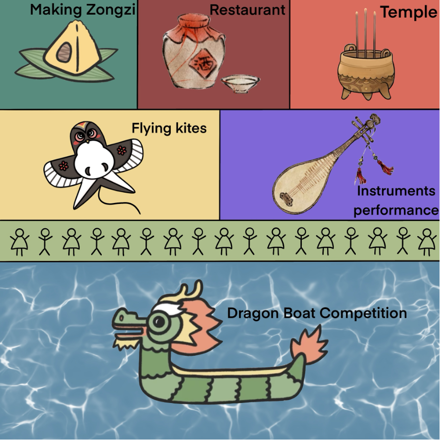
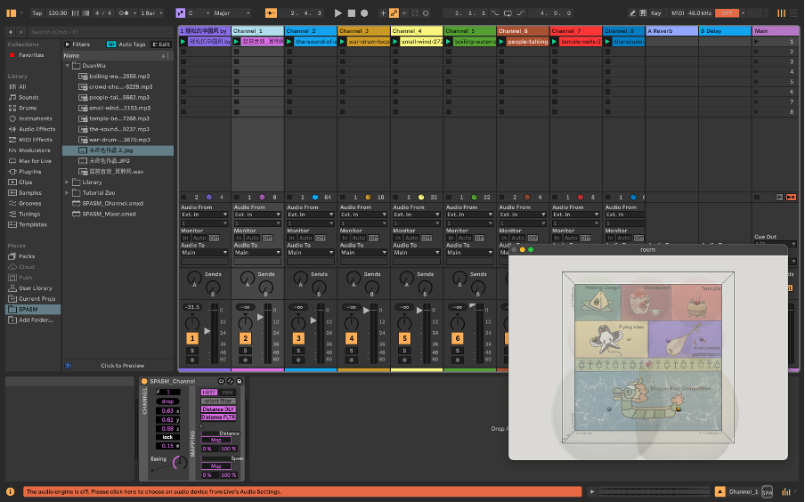
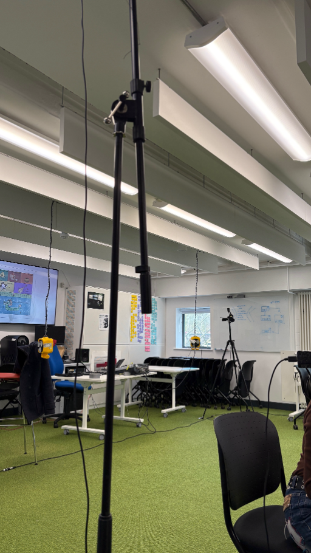

After attending the Spatial Audio Hackathon led by Sebastian Frisch, I gained intuitive and technical insights into how sound flows, positions, and responds to listeners’ behaviours in space. To better translate this knowledge into my own expression, I independently created a spatial audio scene centered around the Chinese traditional festival Dragon Boat Festival after class, and built an interactive experience in Ableton Live 12.
Stage 1: Starting from Visual Conception
I first drew a schematic diagram of Dragon Boat Festival activities in Procreate, including:
- Making Zongzi
- Temple Incense Burner
- Restaurant (with drinking scenes)
- Flying Kites
- Instrument Performance
- Dragon Boat Competition

This image served both as a sound map in my imagination and a layout reference for the subsequent spatial design.
Stage 2: Collection and Matching of Sound Materials
For each area, I sought authentic sound materials that could represent its culture or atmosphere, such as:
- Zongzi steaming sound (boiling-water)
- Temple bell sound (temple-bells)
- War drum rhythm (war-drum-loop)
- Crowd noise (people-talking)
- Folk music samples (traditional instruments)

These audio files were imported into multiple tracks in Ableton Live and distributed in spatial coordinates via the SPASM plugin to simulate real sound distance, direction, and intensity.
Stage 3: Constructing the Spatial Audio System
Using SPASM Channel and SPASM Mixer plugins, I built a 3D-positioned sound scene in the software, employing:
- Distance Mapping (controlling volume based on positional distance)
- HRTF simulation (emulating head-related perceptual differences)
- Motion tracking (achieving dynamic sound changes by simulating head-position shifts)

Finally, by projecting the image onto a screen in the “room,” wearing headphones and walking within the specified area allows listeners to hear sound effects that change according to their “position.”
Reflection
This independent project has made me acutely aware that spatial audio isn’t just a technical combination, but a narrative tool to make cultural scenes audible. Festivals like the Dragon Boat Festival are often dominated by visuals and rituals, yet sound is actually the most vivid thread in memory. Through this exercise:
- I translated cultural storytelling into spatial audio experiences;
- I solidified my grasp of spatial audio channel controls in Ableton;
- I explored how to integrate imagery, interaction, and sound into multi-sensory works.